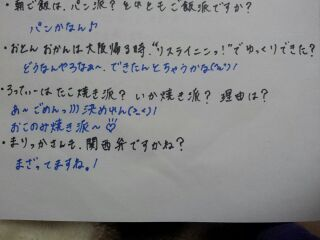
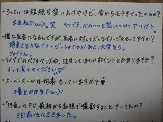
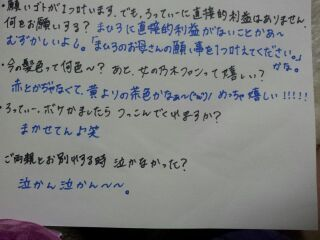

| 2013/03 28 Thu | *コンポタージュ味*ガリガ リ君。(((*´ω`*) Rotty ★ |
Hello ☆
ろってぃー♪だよ\(*▽* \)!
シャキイズムPVろてぃん。

そぅやそぅやっ !!!
皆さん ガリガリ君の
((( コンポタージュ味 З*))///
食べたぁーんwww???
去年 販売したら売れ過ぎて
生産がおいつかなくって
『こりゃ タマゲタぜベイベー』
ってなって
三日で販売中止に
なったんだおねぇ。(`・ω・)☆
で 今年また
えとー、3日前からかな?
また復活したんだよね ! !
そんなに テレビ,NEWSで
やられちゃあ
ろてぃんは
気になって気になって
仕方ないんだよねぇ〜(´▽`*)
てことで
さっそく買いに行きましたん。
いぇ〜ぃ (^^)
だってねえっ
３日で中止なったとか
そんなTVで言われると
『そんな美味しいのかあ ?
コンポタージュの冷たいの...
どんなもんやーい ★ 』
ってなっちゃうよねえっ )))))
え、ならない??? なるでしょ?
あのねえ、
コンポタージュの
ガリガリ君...
アリだわぁ〜(〃▽〃)
でもね、ろてぃん嘘は
つかない。
コンポタージュ
めっちゃ美味しかったけど
やあっぱ昔からある
ソーダ味には勝らないねぇー
((^^ あ 笑
でも美味しいよ(((・▽・)!
まだ食べてない方
食べてみてねん ♪
コンビニで買ってんやけどね、
レジ持って行ったら
レジのおばちゃん♪にね
「いいとこ目
つけましたねぇ〜(。-∀-) ニヤ。」
って言われた 笑
だから
「はは。これ目当てで
来たんですよ (。-∀-)ニヤ」
って返したぁ〜〜 ♪
なんか 全然知らない人なのに
普通に 話しかけてくれたりすると
嬉しい気持ちになっちゃうよねぇ〜
よしっ ! ほなら
今日は みさみさが紹介してくれた
美容院に行ってきますん♪
いってきぃぃ(*・З・*)チュー
のし。

↑ごめ。間違ってたぁぁ:-<
まりか標準語やった>▽<


コメント(180)
2013/03/28 12:00